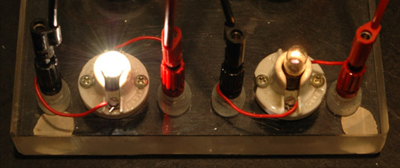

Bulb mystery: why is the left bulb brighter when in parallel but dimmer when in series with the right bulb?

Parallel Circuit
Series Circuit
The puzzling behavior can be explained by applying Ohm's law and the power relationship to the circuits. Voltages and currents were measured, and they are shown on the circuit diagrams along with the calculated resistances and powers. One thing to note is that the calculated bulb resistance differs in the two cases. For example the calculated resistance of the left hand bulb is 9.3 ohms when it is brightly lit (parallel circuit), but only 3.58 ohms when it is dimly lit. When brightly lit, the filament is much hotter, and since the resistance increases with temperature, these values seem plausible. The calculated resistance of the right hand bulb was actually lower when it had slightly higher power, and I have no explanation for that other than a suspicion that the measurements were not sufficiently accurate. Another interesting point is that the effective internal resistance of the alkaline dry cells appears to the lower with the higher current of the parallel circuit. This was noted in other measurements as well, so it may be that there is a maximum efficiency current range for these batteries.
|
Index |